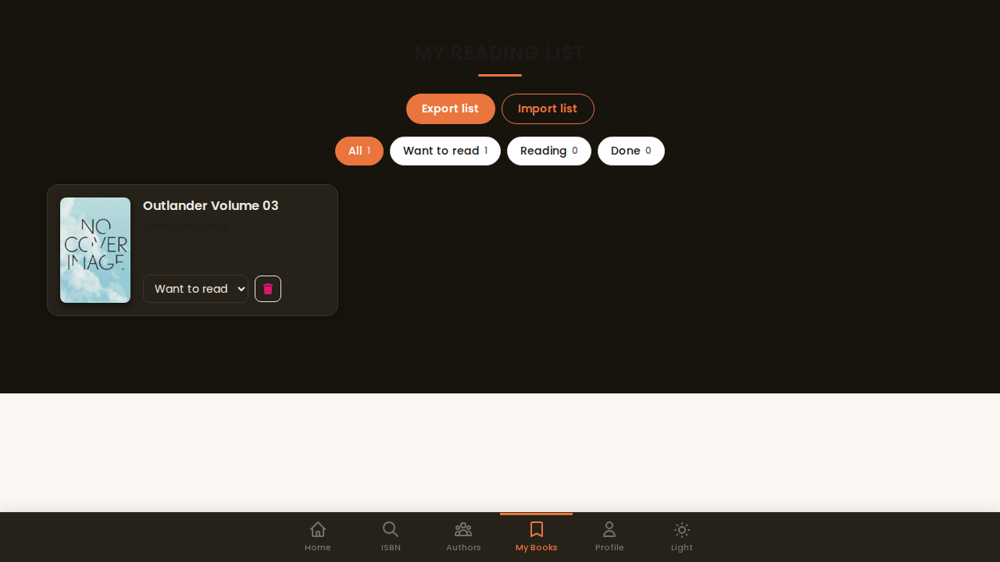
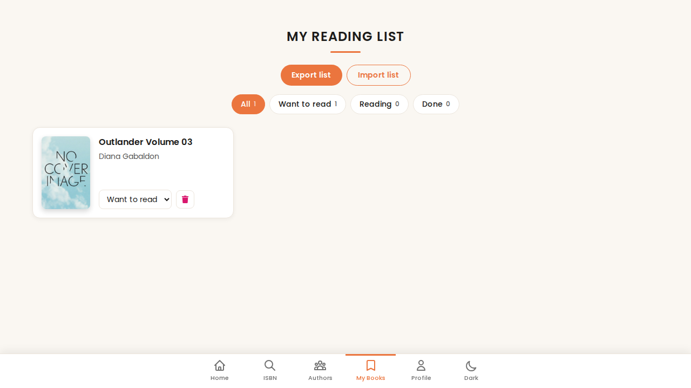
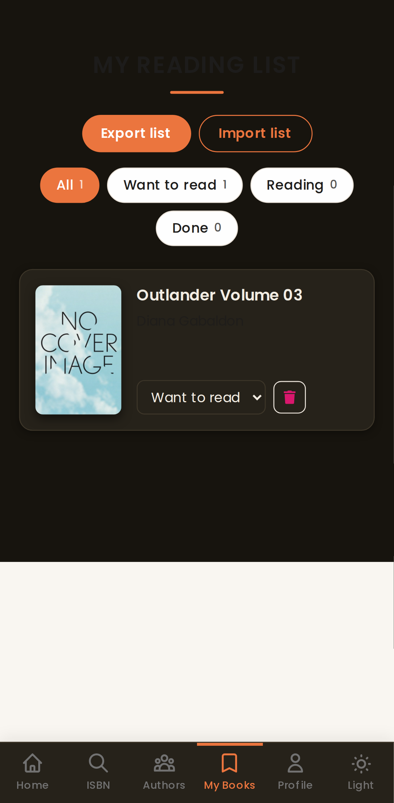

ShelfSeeker E2E report
Run 2026-10-31 07:53 UTC · app commit 3f909d9 (improve/search-errors-export) · Playwright 1.64.1 · 2m 28s
What this covers. The tests drive a real production build of ShelfSeeker in Chromium (desktop and Pixel 7 emulation) against a fake OpenLibrary defined in the test repo. They verify the app's behaviour, request URLs and error handling. They do not verify that the live openlibrary.org API accepts the same queries, and they do not test a real camera, Firefox or Safari.
Summary
Total78
Passed78
Failed0
Flaky (passed on retry)0
Skipped0
Pass rate100%
Trend (last 23 runs)
By browser project
| Project | Result | Passed | Failed | Flaky | Time |
|---|---|---|---|---|---|
| desktop | 39 | 0 | 0 | 2m 20s | |
| mobile | 39 | 0 | 0 | 2m 27s |
By spec file
| File | Result | Passed | Failed | Flaky | Time |
|---|---|---|---|---|---|
| detail-isbn-theme.spec.ts | 14 | 0 | 0 | 45.9s | |
| errors.spec.ts | 18 | 0 | 0 | 1m 2s | |
| gallery.spec.ts | 4 | 0 | 0 | 22.1s | |
| readinglist.spec.ts | 16 | 0 | 0 | 1m 17s | |
| search.spec.ts | 26 | 0 | 0 | 1m 21s |
Slowest tests
| a slow search shows a "responding slowly" notice and then the results (mobile) | 8.5s |
| a slow search shows a "responding slowly" notice and then the results (desktop) | 8.3s |
| screens (mobile) | 8.2s |
| import restores a list in a fresh browser, merge reports what changed (mobile) | 7.8s |
| screens (desktop) | 7.7s |
Failures
None in this run.
All tests
| Status | Test | Project | File | Time |
|---|---|---|---|---|
| passed | search result -> detail page with description, subjects and similar books | desktop | detail-isbn-theme.spec.ts | 2.9s |
| passed | ISBN lookup shows the edition details | desktop | detail-isbn-theme.spec.ts | 3.1s |
| passed | barcode scan without BarcodeDetector support shows an honest notice | desktop | detail-isbn-theme.spec.ts | 2.8s |
| passed | author search shows birth date and top book when expanded | desktop | detail-isbn-theme.spec.ts | 2.8s |
| passed | typing an author name does not show "not found" before searching | desktop | detail-isbn-theme.spec.ts | 2.8s |
| passed | dark mode toggle switches the theme and is remembered after reload | desktop | detail-isbn-theme.spec.ts | 5.3s |
| passed | every bottom-nav page loads without a crash | desktop | detail-isbn-theme.spec.ts | 3.0s |
| passed | search result -> detail page with description, subjects and similar books | mobile | detail-isbn-theme.spec.ts | 3.0s |
| passed | ISBN lookup shows the edition details | mobile | detail-isbn-theme.spec.ts | 3.1s |
| passed | barcode scan without BarcodeDetector support shows an honest notice | mobile | detail-isbn-theme.spec.ts | 2.9s |
| passed | author search shows birth date and top book when expanded | mobile | detail-isbn-theme.spec.ts | 3.0s |
| passed | typing an author name does not show "not found" before searching | mobile | detail-isbn-theme.spec.ts | 2.9s |
| passed | dark mode toggle switches the theme and is remembered after reload | mobile | detail-isbn-theme.spec.ts | 5.3s |
| passed | every bottom-nav page loads without a crash | mobile | detail-isbn-theme.spec.ts | 3.2s |
| passed | search server error shows a message and Try again recovers | desktop | errors.spec.ts | 2.8s |
| passed | network failure shows a connection message | desktop | errors.spec.ts | 2.7s |
| passed | a slow search shows a "responding slowly" notice and then the results | desktop | errors.spec.ts | 8.3s |
| passed | failure while loading more keeps the books already shown | desktop | errors.spec.ts | 2.6s |
| passed | book detail error offers Try again instead of an endless spinner | desktop | errors.spec.ts | 2.7s |
| passed | unknown book id says it was not found | desktop | errors.spec.ts | 2.5s |
| passed | going offline shows the offline banner and an offline-specific search error | desktop | errors.spec.ts | 2.8s |
| passed | ISBN: not in catalogue vs lookup failure are different messages | desktop | errors.spec.ts | 2.8s |
| passed | author search: empty result and failure are both explained | desktop | errors.spec.ts | 2.8s |
| passed | search server error shows a message and Try again recovers | mobile | errors.spec.ts | 3.0s |
| passed | network failure shows a connection message | mobile | errors.spec.ts | 2.9s |
| passed | a slow search shows a "responding slowly" notice and then the results | mobile | errors.spec.ts | 8.5s |
| passed | failure while loading more keeps the books already shown | mobile | errors.spec.ts | 2.8s |
| passed | book detail error offers Try again instead of an endless spinner | mobile | errors.spec.ts | 2.8s |
| passed | unknown book id says it was not found | mobile | errors.spec.ts | 2.6s |
| passed | going offline shows the offline banner and an offline-specific search error | mobile | errors.spec.ts | 3.0s |
| passed | ISBN: not in catalogue vs lookup failure are different messages | mobile | errors.spec.ts | 3.1s |
| passed | author search: empty result and failure are both explained | mobile | errors.spec.ts | 3.0s |
| passed | screens | desktop | gallery.spec.ts | 7.7s |
| passed | error state | desktop | gallery.spec.ts | 2.9s |
| passed | screens | mobile | gallery.spec.ts | 8.2s |
| passed | error state | mobile | gallery.spec.ts | 3.3s |
| passed | add books from the detail page and see them on My Books with counts | desktop | readinglist.spec.ts | 5.1s |
| passed | move a book to another shelf and remove it | desktop | readinglist.spec.ts | 2.7s |
| passed | the list survives a reload (localStorage) | desktop | readinglist.spec.ts | 4.9s |
| passed | export is disabled when the list is empty | desktop | readinglist.spec.ts | 2.5s |
| passed | export downloads a JSON file with the saved books | desktop | readinglist.spec.ts | 7.4s |
| passed | import restores a list in a fresh browser, merge reports what changed | desktop | readinglist.spec.ts | 7.7s |
| passed | importing a bad file shows an error and keeps the existing list | desktop | readinglist.spec.ts | 5.0s |
| passed | invalid entries inside a valid export are skipped and counted | desktop | readinglist.spec.ts | 2.5s |
| passed | add books from the detail page and see them on My Books with counts | mobile | readinglist.spec.ts | 5.3s |
| passed | move a book to another shelf and remove it | mobile | readinglist.spec.ts | 2.9s |
| passed | the list survives a reload (localStorage) | mobile | readinglist.spec.ts | 5.1s |
| passed | export is disabled when the list is empty | mobile | readinglist.spec.ts | 2.6s |
| passed | export downloads a JSON file with the saved books | mobile | readinglist.spec.ts | 7.5s |
| passed | import restores a list in a fresh browser, merge reports what changed | mobile | readinglist.spec.ts | 7.8s |
| passed | importing a bad file shows an error and keeps the existing list | mobile | readinglist.spec.ts | 5.1s |
| passed | invalid entries inside a valid export are skipped and counted | mobile | readinglist.spec.ts | 2.6s |
| passed | home shows the default search with a total count and first page of 30 | desktop | search.spec.ts | 2.7s |
| passed | searching by title shows matching books | desktop | search.spec.ts | 2.7s |
| passed | a search with no matches shows an empty state, not a blank page | desktop | search.spec.ts | 2.8s |
| passed | "Load more" fetches the next pages until everything is loaded | desktop | search.spec.ts | 2.8s |
| passed | language filter is sent to the API and applies to the whole result set | desktop | search.spec.ts | 2.7s |
| passed | earliest-year filter narrows results across pages | desktop | search.spec.ts | 3.5s |
| passed | an invalid year is ignored and explained | desktop | search.spec.ts | 3.6s |
| passed | typing a year sends one request after typing stops, and keeps focus | desktop | search.spec.ts | 3.8s |
| passed | subject filter, combined filters and reset | desktop | search.spec.ts | 2.8s |
| passed | filters that match nothing show an empty state with a reset button | desktop | search.spec.ts | 3.5s |
| passed | "Newest first" asks the API for newest and shows newest first | desktop | search.spec.ts | 2.7s |
| passed | "Title A-Z" sorts the loaded books without another API request | desktop | search.spec.ts | 2.7s |
| passed | a new search clears the filters | desktop | search.spec.ts | 2.8s |
| passed | home shows the default search with a total count and first page of 30 | mobile | search.spec.ts | 3.0s |
| passed | searching by title shows matching books | mobile | search.spec.ts | 3.0s |
| passed | a search with no matches shows an empty state, not a blank page | mobile | search.spec.ts | 3.0s |
| passed | "Load more" fetches the next pages until everything is loaded | mobile | search.spec.ts | 2.9s |
| passed | language filter is sent to the API and applies to the whole result set | mobile | search.spec.ts | 2.9s |
| passed | earliest-year filter narrows results across pages | mobile | search.spec.ts | 3.7s |
| passed | an invalid year is ignored and explained | mobile | search.spec.ts | 3.8s |
| passed | typing a year sends one request after typing stops, and keeps focus | mobile | search.spec.ts | 4.0s |
| passed | subject filter, combined filters and reset | mobile | search.spec.ts | 3.0s |
| passed | filters that match nothing show an empty state with a reset button | mobile | search.spec.ts | 3.7s |
| passed | "Newest first" asks the API for newest and shows newest first | mobile | search.spec.ts | 2.9s |
| passed | "Title A-Z" sorts the loaded books without another API request | mobile | search.spec.ts | 2.9s |
| passed | a new search clears the filters | mobile | search.spec.ts | 3.0s |
Screens the tests looked at (fixture data)







